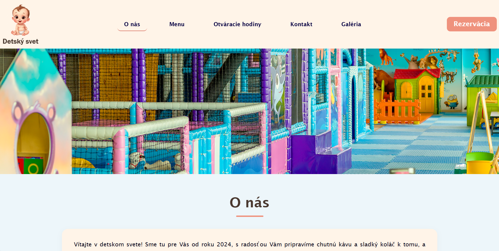

PROJEKT 01
Detský svet
Rodinná kaviareň
Prezentačná webstránka fiktívnej rodinnej kaviarne s detským kútikom. Obsahuje informácie o kaviarni, menu, otváracích hodinách, galériu a kontaktnú stránku. Súčasťou je aj rezervačná stránka na organizovanie detských osláv.